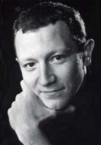
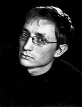
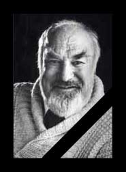
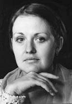
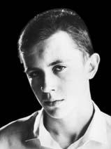
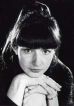
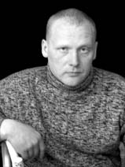
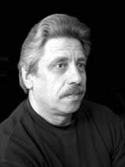
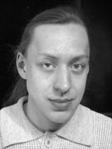

Глеб БогаевскийартистЗакончил Белорусскую государственную академию искусств.В театре с 08.11.1995 г. Основные роли: Пес Крепыш в спектакле «Очень простая история» (М. Ладо), Сын ("Шестеро персонажей в поисках автора" Л. Пиранделло), Жак Простак ("Кот в сапогах" С. Прокофьева, Г. Сапгира), Макхит ("Трехгрошовая опера" Б. Брехта), Фенардо ("Изобретательная влюбленная" Лопе де Веги), Почтальон ("Венчание" Ж. Ануя), Феликс ("Невеста из Парижа" Б. Рацера, В. Константинова), Гельвер ("Ночь Гельвера" И.Вилквиста), Серж ("Ким" А.Дударева). |
 |
Максим ГагарскийактерВ театре с октября 2003 года. Закончил Могилевское государственное училище культуры им. Н.К.Крупской. Основные роли: Арнольд Эпштейн в спектакле «Билокси-блюз» (Нил Саймон), Пелле в спектакле «Малыш и Карлсон» (А. Линдгрен), Ветерок в спектакле «Дикие лебеди» (Г.-Х. Андерсен), Музыкант в спектакле «Она в отсутствии любви и смерти» (Э. Радзинский), Петух в спектакле «Очень простая история» (М. Ладо), Солдат и Афоня младший в спектакле «Я твоя невеста» (В. Астафьев), Десьо ("Дон Хиль – зеленые штаны" Т.де Молина), Иванушка ("Два клена" Е.Шварца), Ленин ("Комната смеха для одинокого человека" О.Богаева), Статуя Командора ("Полоумный Журден" М.Булгакова), Леший ("Аленький цветочек" С.Аксакова). |
 |
Вячеслав ГалкинактерВ театре с 09.11.1983 г. Основные роли: Нотариус в спектакле «Полоумный Журден» (М. Булгаков), Сэр Джон в спектакле «Костюмер» (Р. Харвуд), Фотограф в спектакле «Я твоя невеста» (В. Астафьев), Купец в спектакле «Аленький цветочек» (С. Аксаков), Лоу в спектакле «Чествование» (Б. Слэйд), Директор ("Шестеро персонажей в поисках автора" Л. Пиранделло), Альтоум ("Турандот" К. Гоцци), Пичем ("Трехгрошовая опера" Б. Брехта), Кучумов ("Бешеные деньги" А. Островского), Егор ("Светопреставление" М. Горького), Бернардо ("Изобретательная влюбленная" Лопе де Веги), Барон, Монах ("Маленькие трагедии" А. Пушкина), Кэбот ("Любовь под вязами" Ю. О'Нил), Поручик ("Прощание" Е. Поповой), Евдоким ("Невеста из Парижа" Б. Рацера, В. Константинова), Клеант ("Тартюф" Ж. Мольера). |
 |
|  |
Анна ЛеденеваактрисаСтудентка Белорусской государственной академии искусств. Закончила Могилевское училище культуры им. Н.К. Крупской. В театре с 21.03.2000 г. Основные роли: Устинька, подруга Капочки, купеческая дочь в спектакле «Праздничный сон или Женитьба Миши Бальзаминова» (Александр Островский), Няня в спектакле «Я твоя невеста» (В. Астафьев), Капа в спектакле «Аленький цветочек» (С. Аксаков), Фея ("Кот в сапогах" С. Прокофьева, Г. Сапгира). |
Евгений МаксименкоактерСтудент Белорусской государственной академии искусств. В театре с 05.09.2001 г. Основные роли: Михайло Дмитрич Бальзаминов, ее сын, чиновник в спектакле «Праздничный сон или Женитьба Миши Бальзаминова» (Александр Островский), Юджин М. Джером в спектакле «Билокси-блюз» (Нил Саймон), Учитель танца и музыки в спектакле «Полоумный Журден» (М. Булгаков), Участник проекта Шекспир company.by «Все пьесы Шекпира», Миша в спектакле «Я твоя невеста» (В. Астафьев), Джуд в спектакле «Чествование» (Б. Слэйд), Малыш в спектакле «Малыш и Карлсон» (А. Линдгрен), Дональд Бейкер в спектакле «Эти свободные бабочки» (Л. Герш), Монах Авраамка в спектакле «Легенда о Машеке» (С. Ковалев), Констебль ("Трехгрошовая опера" Б. Брехта), Ким ("КИМ" А. Дударева), Волк ("Про тех, кто боится" М. Бартенева). |
 |
Олеся ШаповаловаактрисаЗакончила Белорусскую государственную академию искусств. В театре с 17.01.1995 г. Основные роли: Зелима ("Турандот" К. Гоцци), Ифида ("Сестры Психеи" С. Ковалева), Нора ("Воспоминание о Вавилоне" Е. Поповой), Люси ("Трехгрошовая опера" Б. Брехта), Лена ("КИМ" А. Дударева), Лисео ("Изобретательная влюбленная" Лопе де Веги), Лаура ("Маленькие трагедии" А. Пушкина). |
 |
|  |
Георгий Протасовзаведующий художественно-постановочной частьюВ театре с 1996 г. |
Дмитрий Леонтьевзаведующий монтировочным цехомВ театре с 1981 г. |
 |
|  |
Сергей Хмельковхудожник-бутафорВ театре с 2002 г. |